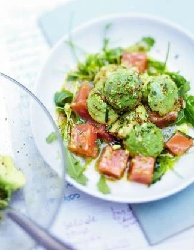

Salade d'avocat au saumon

Avocat + saumon = un tandem gourmand qui plaît à coup sûr !
Cette délicieuse recette associe l'onctuosité de l'avocat au saumon tendre et savoureux. La salade est rafraîchissante et parfaite pour un repas rapide et satisfaisant.
Ingrédients
- 3 avocats
- 1 citron
- 200 g de saumon mariné
- 2 poignées de roquette
- 3 cuillère(s) à soupe d'huile d'olive
- 2 cuillère(s) à soupe de vinaigre de cidre
- 1 cuillère(s) à soupe de moutarde à l'ancienne
- 1 bouquet de coriandre ou de basilic
- poivre du moulin
Étapes
- Ouvrez les avocats, retirez les noyaux, prélevez la chair avec une grande cuillère.
- Disposez les boules dans un saladier et arrosez-les avec le jus du citron.
- Coupez le saumon mariné en cubes, ajoutez-les dans le saladier avec la roquette lavée et la coriandre ou le basilic lavés et ciselés.
- Mélangez l’huile, le vinaigre, la moutarde, du sel, du poivre et 2 c. à soupe d’eau, émulsionnez la sauce et versez-la sur la salade. Remuez délicatement et servez.
Astuce
Vous pouvez remplacer le saumon mariné par du cœur de filet de saumon fumé ou de fines lanières de saumon fumé.